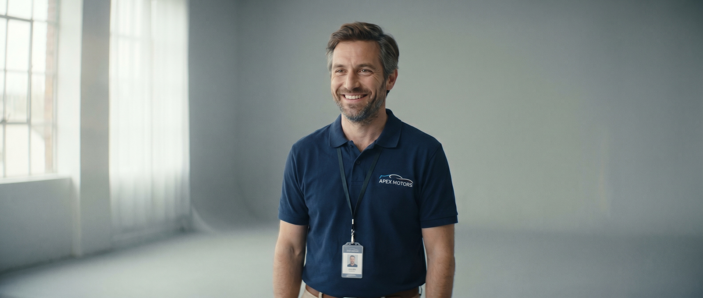
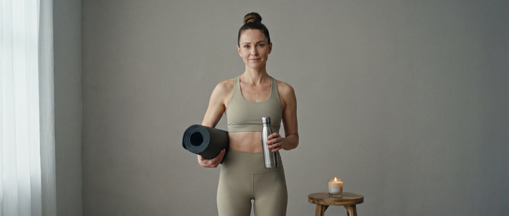
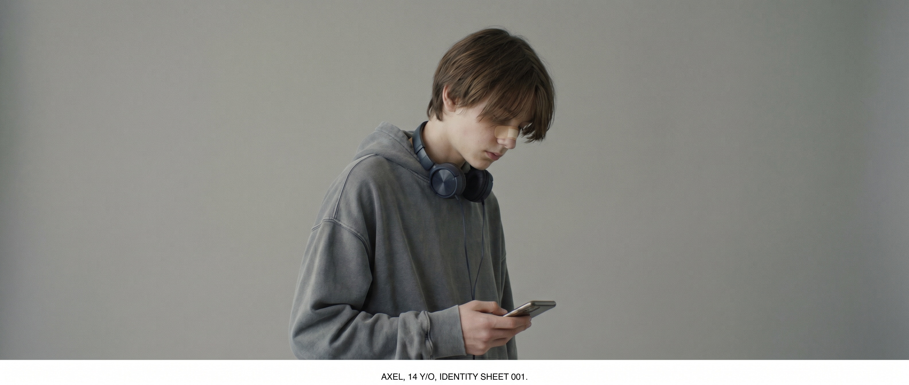
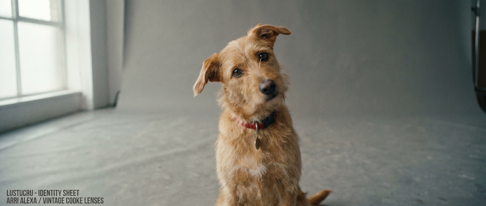
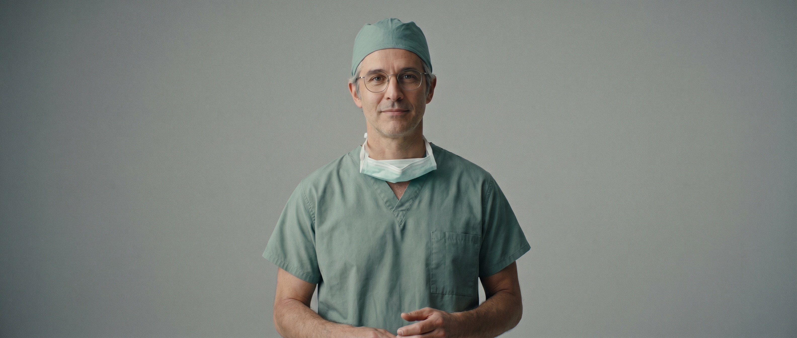

Bande-annonce · prochainement
Simple comme
une amputation
Julien est prêt à tout pour se débarrasser de sa jambe gauche.
Un film d'Alexandre
Voir la bande-annonce
Julien, 40 ans, vendeur de voitures électriques, mari modèle, père tranquille. Jusqu'au jour où son cerveau cesse de reconnaître sa jambe gauche. Cette jambe-là n'est plus la sienne.
Dans un monde où l'on n'a pas le droit de se débarrasser d'un membre sain, Julien va devoir ruser : faux accidents de chasse, neige carbonique, blocs de béton, rails de chemin de fer… Tous les moyens sont bons. Mais un chirurgien obstiné s'acharne à le réparer. Il ne lui restera bientôt plus qu'une seule solution. Une comédie (très) noire sur l'identité, le corps, et le bonheur — simple comme une amputation.
La famille.




